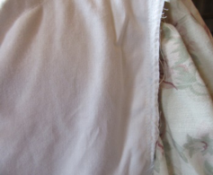
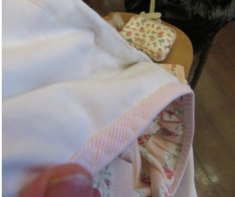

Important: Please read these notes carefully, as these dresses do not fit as standard sizes.


Dependent upon the type and quality of fabric used and the design of the garment, different finishing methods may have been employed in the construction of the dress. That is, at the more ‘purse-kind’ end of the range (e.g. upcycled polycotton), and for thicker fabrics, seams may be finished with machine zig-zag stitch, whereas for virgin cottons and satins edges are more likely to be bound or French seamed.
All dress bodices are lined with a strong cotton to maintain shape, but skirts are only lined where there is an element of poly in the fabric (thereby preventing ‘cling’), or if the fabric is particularly delicate and requires a lining for decency’s sake. Skirt linings are usually made of 100% light cotton muslin, and generally fall to the calf.
A detachable, pin-in modesty panel is included with each drawstring garment, which accommodates those fluctuations in size which I find occur from time to time! Where necklines are fitted with a drawstring ribbon, these have been left pinned in for transit. I would suggest that, once you have pulled and adjusted them to fit, these should be tacked into place at the neck edge opening to avoid them slipping back into the fabric and causing the back to gape at the neckline.
The underbust on all the drawstring dresses is fitted with elastic, which is fully adjustable to fit. You will find that there is a loop of elastic protruding from the drawstring channel on the inside of the fabric for this purpose, held in place for transit with a safety pin. One fitted to size, it may be best to put some strong stitches in the elastic to secure unless you envisage having to make fluctuating adjustments in the future. Should you find you need to take out some fullness at the bust, I find the best method is to simply put in a couple of vertical seams at the front from neck channel to underbust channel, placed so that they disappear into the gathers.
Most garments have a reasonable hem which can be let down, and I have in most cases been able to affix any trims away from the hem stitching to make this easier. To take up dresses with a lace trim or flounce, I would suggest pinching all the way around ABOVE the trim until the desired shortened length is achieved then stitching the resulting channel in place, rather than the more laborious method of taking the trim off, shortening the hem, then replacing the trim.
Spencers, pelisses and sundry items will have their own construction and fitting notes included in their individual listings, so please read these carefully.
All fabrics, be they brand new or upcycled, will have been laundered before construction to hopefully counter any subsequent shrinkage when washed again. However, it would be prudent to wash using a short 30 or 40 degree cycle, and the more delicate items might benefit from being hand-washed. I really wouldn’t recommend tumble drying anything due to the delicacy of the lace and / or trims.
Finally, a note on Underwear!!!
While it is great while you have them or are an absolute purist, there is no need to go to the trouble of obtaining ‘short stays’ as there a few unconventional cheats you can employ. I find a good, supportive padded and underwired balcony bra is adequate for the non-gathered bodices. However, for the drawstring styles, the gathering tends to fall down the cleavage gap, so I sew a robust panel (use something like ‘Peltex Ultra-Firm Sew-In Stabilizer’) to the bra from centre of cup to centre of cup and tack it in place to the underwiring channels of the bra. For lighter fabrics, this is sufficient, but for stronger fabrics it is sometimes necessary to place some padding behind the panel in the gap area - I find a rolled-up pair of socks to be just the thing! Not particularly elegant, but it does the job!